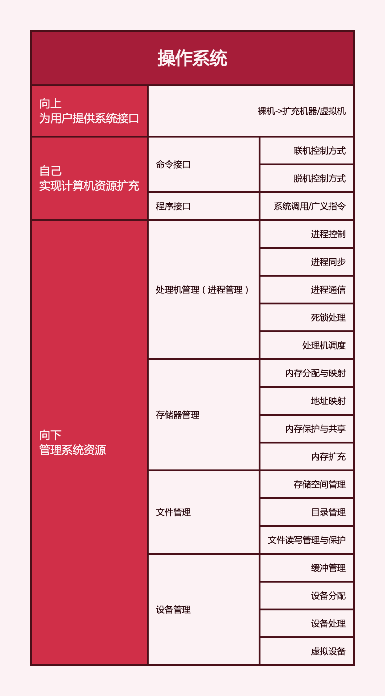

计算机分层：硬件、操作系统、应用软件、用户。
操作系统的概念：控制和管理计算机系统的硬件和软件资源、组织调度计算机工作与分配资源、为用户和软件提供接口与环境的程序集合。
操作系统的目标：方便性（最重要）、时效性（最重要）、可扩展性、开放性
操作系统的作用：

- OS作为用户与计算机硬件系统之间的接口：用户通过<命令方式>，<系统调用方式>，<图标-窗口方式>实现与操作系统的通信
- OS作为计算机系统资源的管理者：管理<处理机>，<存储器>，<文件>，<IO设备>
- OS实现了对计算机资源的抽象：OS是铺设在计算机硬件上的多层软件的集合，它可以对硬件或已抽象的模型进行抽象。(eg. 裸机+IO设备管理软件->第一层虚拟机+文件系统->第二层虚拟机+...)
操作系统的特征
- 并发：多个时间同一时间间隔内发生。
- 并发与并行
- 共享：系统中的资源可以供内存中多个并发执行的进程共同使用。
- 互斥共享方式，临界资源
- 同时访问方式
- 并发与共享是最基本的特征，两者互为条件。
- 虚拟：物理上的实体变为若干逻辑上的对应物。
- 时分复用技术：虚拟处理器
- 空分复用技术：虚拟存储器
- 异步：多道程序环境允许多个程序并发执行，但由于资源受限，执行不能一贯到底。
接口 = 命令接口 + 程序接口
命令接口 = 联机命令接口(交互式命令接口) + 脱机命令接口(批处理命令接口)
程序接口 = {广义指令(系统调用)}
系统调用只能通过用户程序间接使用
系统调用是操作系统提供给应用程序的唯一接口
用户可以通过命令接口和系统调用两种方式使用计算机
GUI（图形接口），GUI通过调用程序接口实现。GUI不是操作系统的一部分，GUI调用的系统调用是操作系统的一部分。
系统开机后，操作系统程序会被自动加载到内存的系统区，这段区域是RAM！